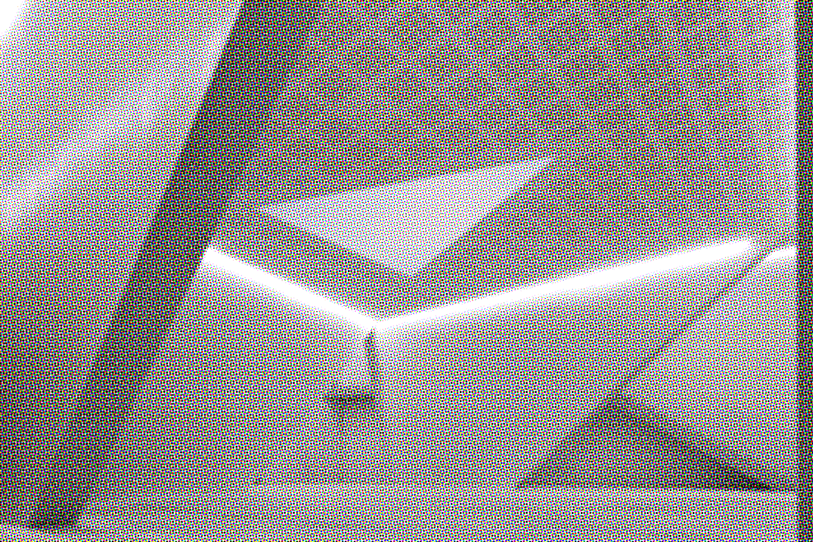
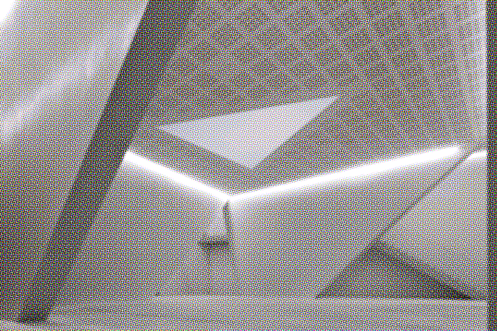
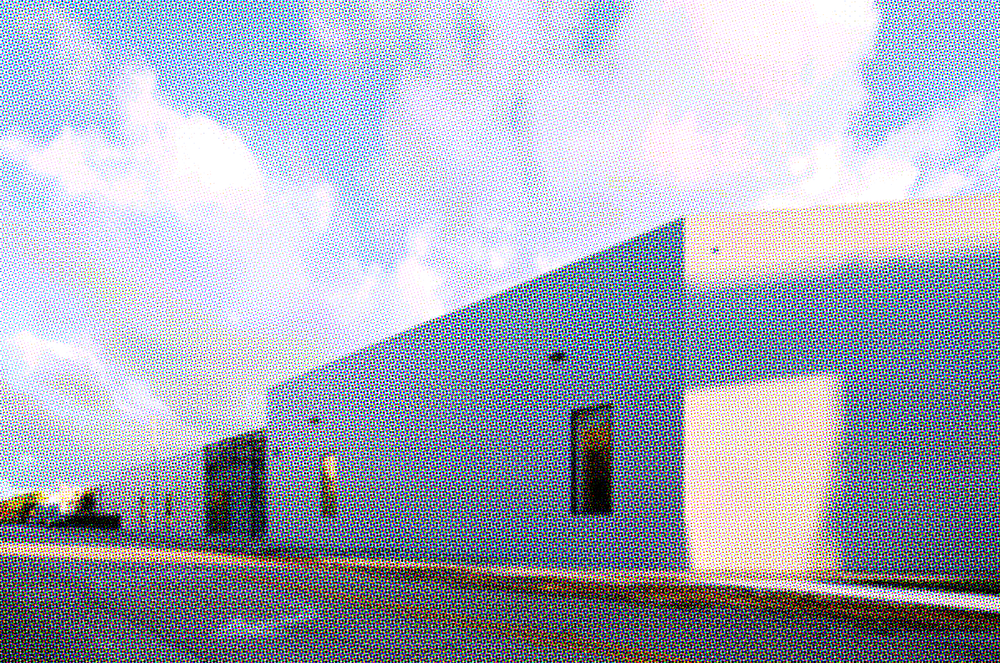
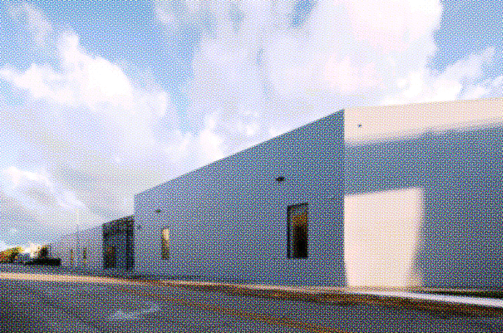
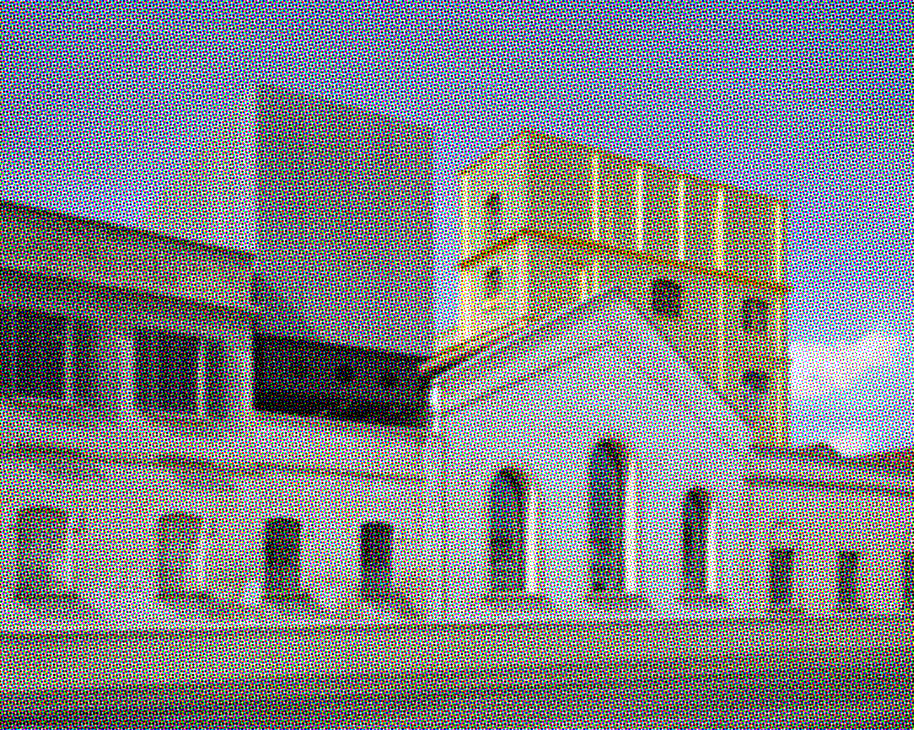
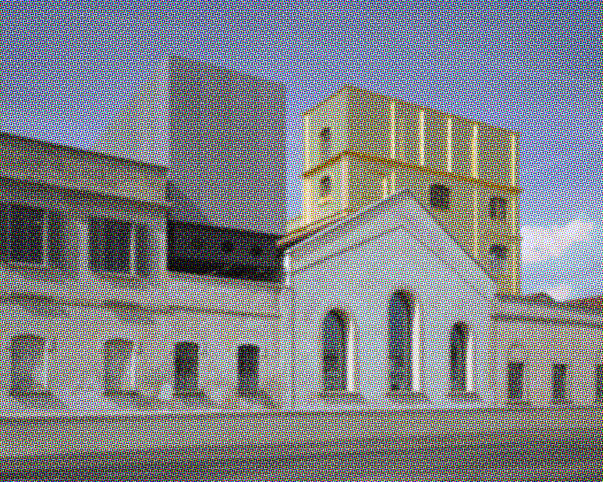

We are often assured that museums
 are central to our existence as civilized, spiritually complete beings. We are also told that
museums
are central to our existence as civilized, spiritually complete beings. We are also told that
museums bring
art
bring
art closer to
people
closer to
people and help make
art
and help make
art a part of life.
a part of life.
A visit to almost any modern art
 museum
museum teaches the exact opposite of these claims. Inside and out, modern
museums
teaches the exact opposite of these claims. Inside and out, modern
museums are designed to keep
art
are designed to keep
art away from
people – physically, psychologically and intellectually – and to keep
art
away from
people – physically, psychologically and intellectually – and to keep
art removed from daily life. It is telling that so many modern
museums
removed from daily life. It is telling that so many modern
museums resemble windowless tombs, bunkers or bank vaults. Both of the
museums
resemble windowless tombs, bunkers or bank vaults. Both of the
museums pictured on this page are reminiscent of the fortified castle keeps of the dark ages (the Whitney actually has a moat). By design, modern
museums
pictured on this page are reminiscent of the fortified castle keeps of the dark ages (the Whitney actually has a moat). By design, modern
museums literally force
people to experience
art
literally force
people to experience
art as untouchable, unexplainable treasures – refridgerated relics from the past or the present.
Museums
architecturally enforce the untruth that
art
as untouchable, unexplainable treasures – refridgerated relics from the past or the present.
Museums
architecturally enforce the untruth that
art comes only in scarce, ownable forms that must be protected from both the elements and human understanding.
comes only in scarce, ownable forms that must be protected from both the elements and human understanding.
An Anti-Catalog (1977)